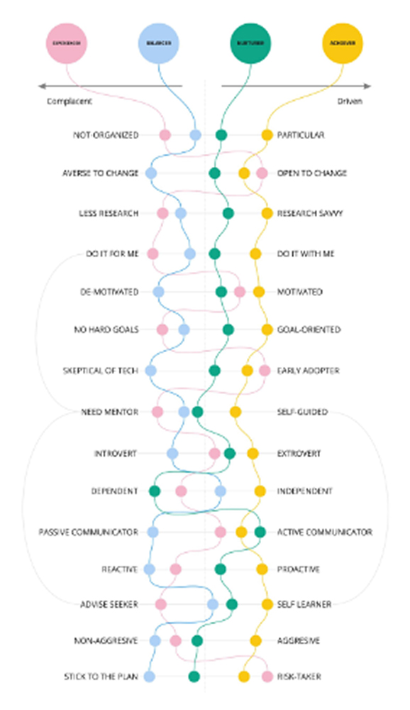
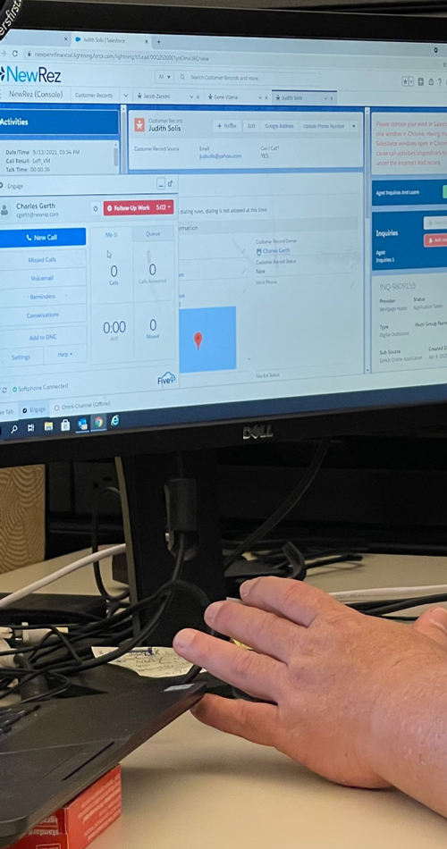
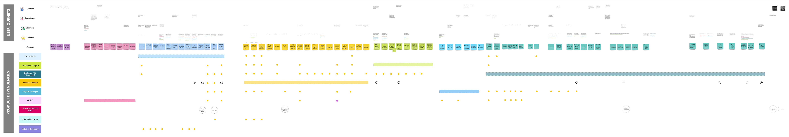
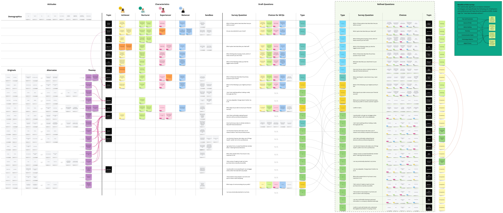
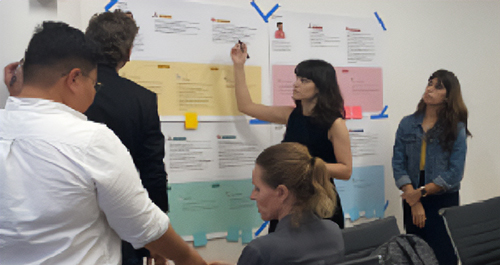
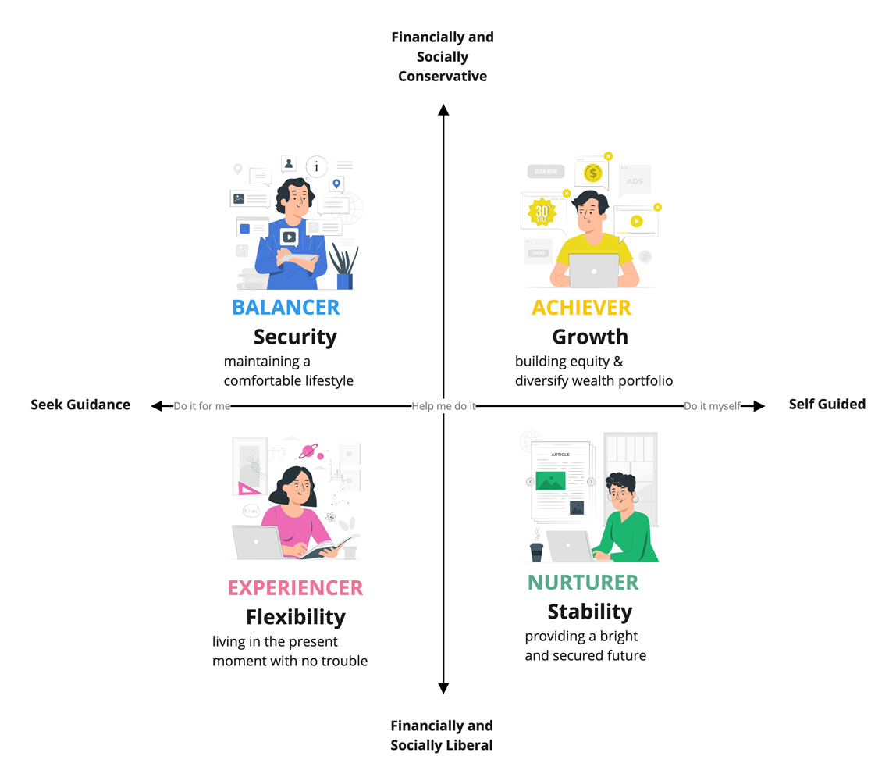
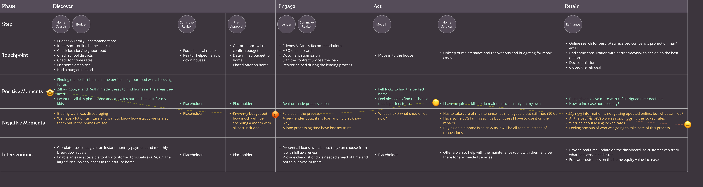
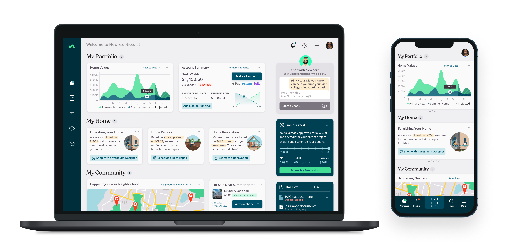
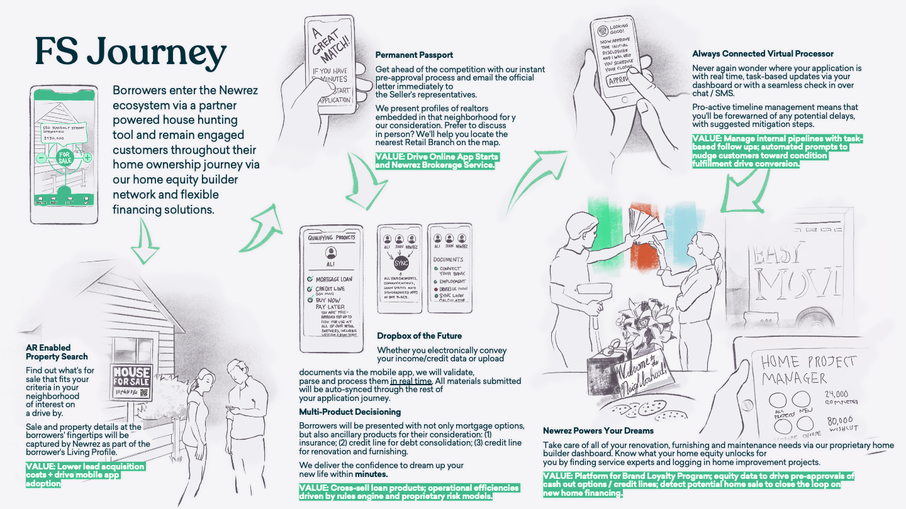

Newrez wanted to understand why customers were losing their rate locks and why internal teams didn’t use the tools built to support them.
The organization attributed customer drop-off and rate lock losses primarily to broker inefficiency and missed lock windows.
1. Customers were losing their guaranteed rates because of delays, miscommunication, and preventable mistakes on both sides of the process.
2. Loan processing staff had replaced the tools designed to support them with personal workarounds that didn’t work downstream.
I led a small UX Research team in gathering trends in home buying and adjacent industries, then identifying where the mortgage experience diverged from customer expectations.
We supplemented the landscape work with quantitative surveys of different types of mortgage buyers, as well as non-customers, to understand how they felt about their experience, identifying where the process created uncertainty and where reality had fallen short of expectations.

In parallel, the team observed and interviewed loan officers, processors, and underwriters in their actual working environments. The field work revealed a gap between how the process was designed to work and how it actually worked..
Internally, the tools meant to manage the loan pipeline generated confusion, so staff had built informal workarounds like personal spreadsheets and manual tracking “systems” that served them individually but made it difficult to transfer information to anyone else.
On the customer side, borrowers were unable to see what was happening with their loan, were asked to repeat steps like providing documents, and didn’t understand what the next step would be.


Workshop Synthesis BoardThen we compiled different tracks of research during a synthesis workshop to develop a journey for both sides of the loan process. We surfaced patterns in customer behavior that corresponded to actual needs during the loan process as opposed to their stated goals..


These patterns across the data were distilled into four distinct customer archetypes defined by their behavioral motivations, financial confidence, and response to uncertainty. Each archetype had a meaningfully different relationship with the mortgage process.
We built journey maps for each archetype layering the existing experience over their needs, crystalizing the gap between what we had and what would be effective..


Customer archetype modelFrom there, we defined an ideal experience based on principles addressing each customer archetype. Internal tools were reimmagined, underpinned by modern technologies (OCR, Machine Learning, etec.), as one side of a coin mirroring the customer tools.

1. We think of rate lock losses as a process failure, but they're actually a communication and expectation failure that compounds as it passes through roles.
2. We think of customer drop-off as dissatisfaction with rates or products, but customers are most likely to disengage when the process feels opaque and outside their control.
3. We think internal tools improve efficiency by standardizing workflows, but when they don't match how staff actually work, they add effort rather than reduce it.
4. We think of loan officers and processors as a unified internal team, but each person optimizes for themselves, creating downstream rework.
5. We think customer behavior clusters around demographics, but loan completion patterns follow behavior and mindsets determined by motivation and risk tolerance.
6. We think a better platform will resolve internal fragmentation, but it must address working styles and incentive structures, not just the tools.

journey map detail or archetype matrixA. Reimagine the mortgage as a long-term relationship by staying present across every home-related financial moment, not just the transaction.
B. Personalize product discovery by making it easy to find the right financing option at the moment borrowers are ready to act, rather than asking them to navigate a product catalog.
C. Simplify the application process by capturing and syncing documents in real time, so borrowers can focus on their new home instead of managing paperwork.